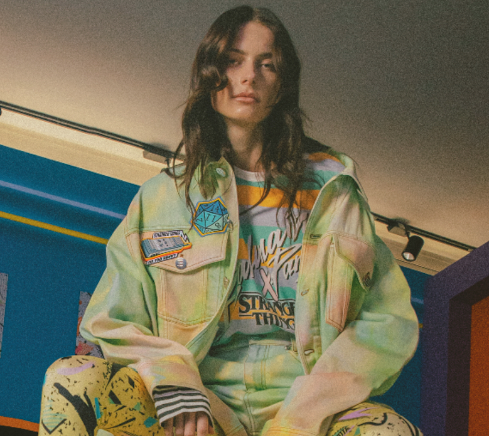
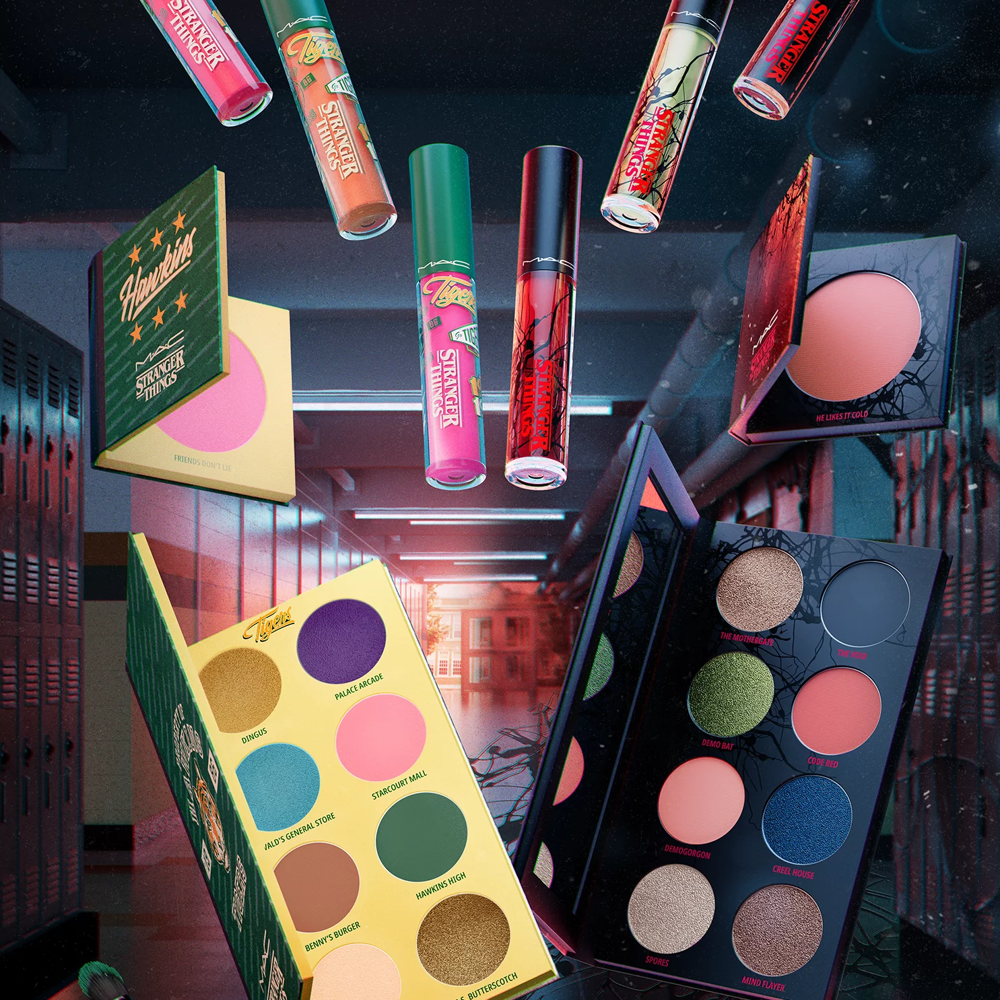

Recent Collaborations
Balmain
Released on November 6th, the annual Stranger Things Day, the range arrives with clothing, accessories and a special-edition iteration of the house’s signature B-Court sneaker. Balmain Creative Director Olivier Rousteing builds on the classic ‘80s wardrobes in the series, channeling the era’s bright pop spirit.
Quicksilver

The Quiksilver x Stranger Things collection takes us back to the raw energy of 1986 in a series of era-inspired releases. This collection includes affordable T-Shirts, Hoodies, Jackets, Shorts, Joggers, Swimwear,Bags, Sunglasses, Hats, and Beach Accessories.
Mac Cosmetics
Demogorgons aren't the only thing that escapes The Upside Down. Experience the transformative shades of the MAC X Stranger Things Make-up collab and take your beauty to whole new dimensions.
Timex
For this special edition collection, a brave exploration of our own archive has resurfaced three cult classics from this iconic era-Timex Camper, Timex T80, and the unforgettable Timex Atlantis. The resulting capsule signifies a pact between two cultural phenoms that routinely bring wistfil, period-specific elements out of the darkness and into the light.
Stance

This Stance X Stranger Things collection allows you to express your style while showing off your love for Stranger Things. The collection features socks with the Stranger Things' logo, Barb from season 1, and Eleven.
Nike
These classic Nike shoes designed after the Hawkins High Basketball Team from season 4, feature the team colors along the with Hawkins High logo. Each shoe comes with Nike x Stranger Things packaging and special edition Stranger Things pins./p>